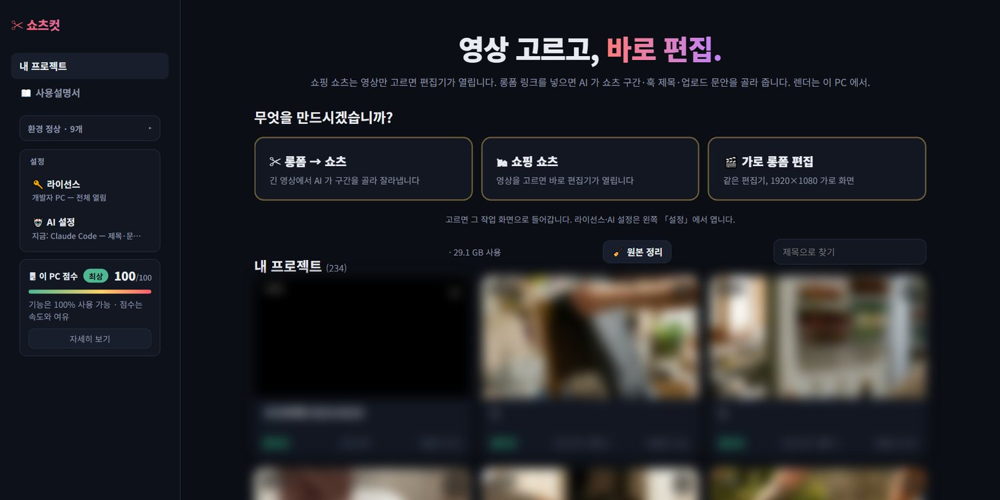
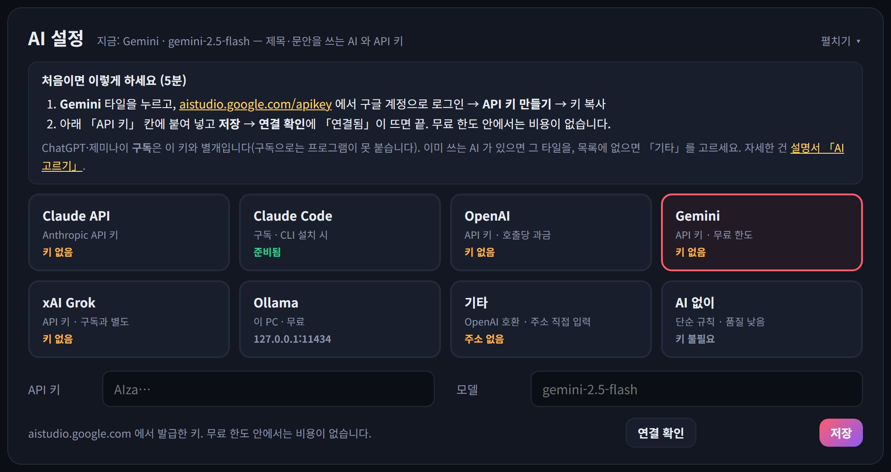
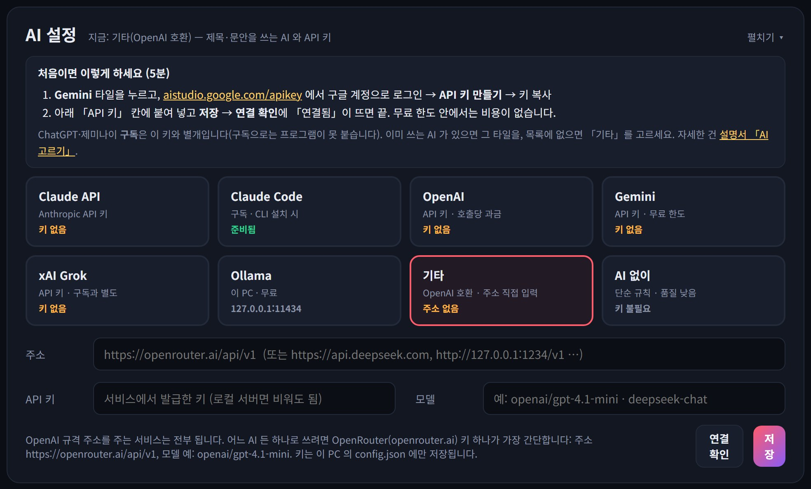
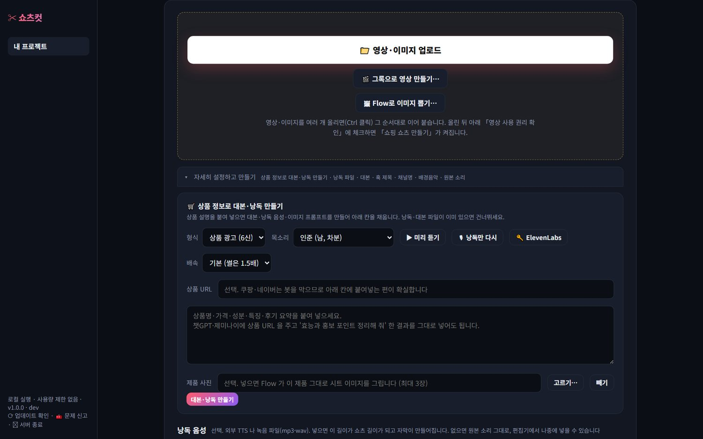
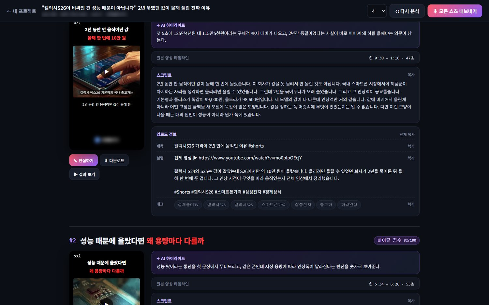
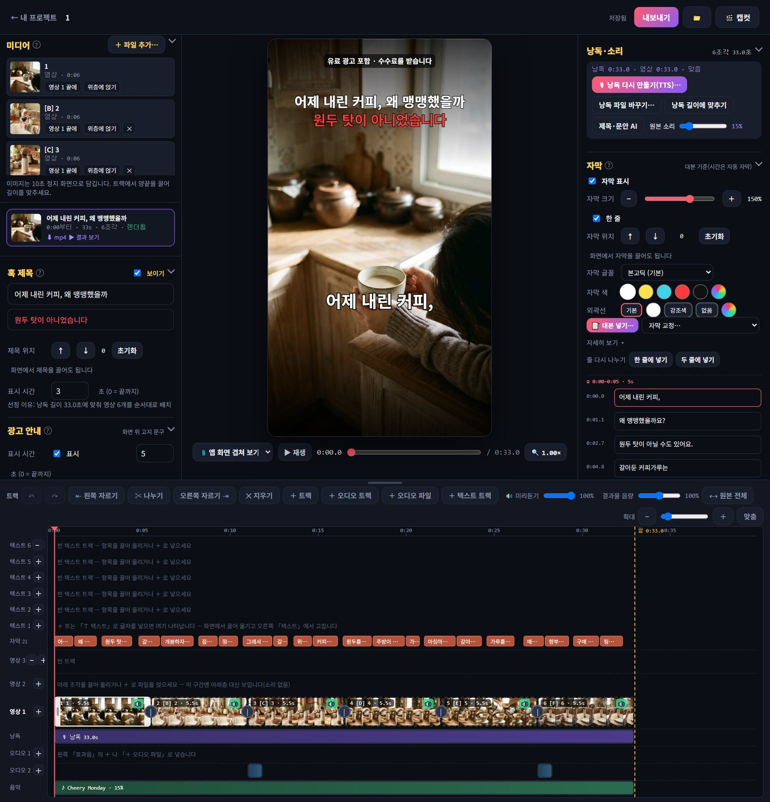
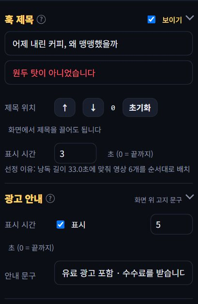
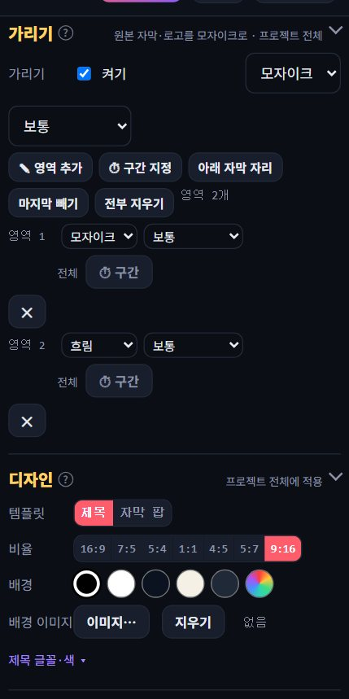
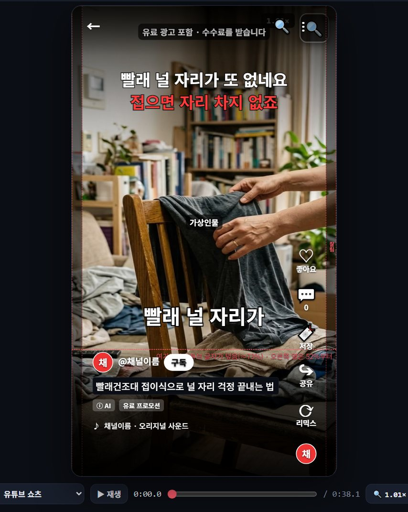
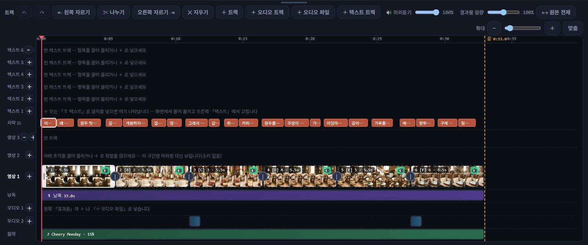

쇼츠컷 상세 안내
내 PC에서 돌아가는 쇼츠 제작 프로그램입니다. 제품 영상에 낭독을 얹어 쇼핑 쇼츠를 만들고, 긴 영상에서 쇼츠를 뽑고, 가로 영상도 같은 편집기로 손봅니다. 이 문서는 설치부터 내보내기까지 화면 순서대로 설명합니다.
1. 시작하기
설치와 첫 실행
- 받은 zip을 원하는 폴더에 풉니다. 한글 경로도 됩니다.
실행.cmd를 더블클릭합니다. 창이 잠깐 스치고 잠시 뒤 브라우저에 쇼츠컷 홈이 열립니다. 프로그램은 뒤에서 조용히 돌며(1.0.4부터), 끄려면 홈 오른쪽 위 ⏻ 서버 종료를 누릅니다. 1.0.3 이하에서는 검은 창이 남아 있고 그 창을 닫으면 프로그램이 꺼집니다.- 처음 실행하면 영상 처리 도구(ffmpeg)를 자동으로 내려받습니다. 1~2분 걸리며 홈 위쪽에 진행 상태가 보입니다.
- 브라우저를 닫아도 프로그램은 살아 있습니다. 다시 열려면 주소창에
http://127.0.0.1:8796을 넣거나 실행.cmd 를 다시 누르세요. shortscut.kr 첫 화면의 「편집기 열기」 단추도 같은 주소로 갑니다.

홈은 고르는 화면입니다. 카드를 누르면 그 작업 화면으로 들어가고, 왼쪽 위 ← 홈 으로 돌아옵니다. 설정(라이선스·AI·폰에서 쓰기)은 홈 아래쪽에, 환경 점검은 왼쪽 칸에 접혀 있습니다.
필요한 환경: Windows 10/11 64비트, 인터넷(AI 호출·업데이트용). 자세한 사양은 바로 아래 내 컴퓨터 사양을 보세요.
내 컴퓨터 사양 — 최소 · 표준 · 추천
쇼츠컷은 서버 없이 내 PC의 힘으로 돌아갑니다. 그래서 컴퓨터가 느리면 프로그램도 느립니다. 특히 미리보기가 끊기는 것은 대부분 프로그램 고장이 아니라 그 순간 컴퓨터가 다른 일로 바쁜 것입니다(아래 「미리보기가 끊겨요」).
| 최소 | 표준 | 추천 | |
|---|---|---|---|
| CPU | 4코어 (인텔 i5 8세대 · 라이젠 5 2세대급) | 6~8코어 (i5 12세대 · 라이젠 5 5600급) | 8코어 이상 (i7 12세대 · 라이젠 7 5800급 이상) |
| 메모리 | 8GB | 16GB | 32GB |
| 그래픽 | 내장 그래픽 | NVIDIA GTX 1660 (6GB) 이상 | NVIDIA RTX 3060 (8GB) 이상 |
| 저장 장치 | SSD 10GB 여유 | SSD 50GB 여유 | NVMe SSD 100GB 여유 |
| 화면 | 1366×768 | 1920×1080 | 1920×1080 이상, 모니터 2대 |
| 브라우저 | 크롬 또는 엣지 최신판 (프로그램 화면이 브라우저에서 열립니다) | ||
- 최소 사양에서 되는 것 — 쇼핑 쇼츠·롱폼→쇼츠 제작 전부. 다만 1분 쇼츠 렌더에 1~2분, 받아쓰기(자막 없는 영상)는 CPU 로 돌아 영상 길이만큼 걸립니다.
- 표준 사양 — 1분 쇼츠 렌더 20~40초. NVIDIA 카드가 있으면 받아쓰기가 GPU 로 돌아 몇 배 빨라집니다.
- 추천 사양 — 렌더와 받아쓰기를 돌리면서 편집을 이어 할 수 있는 수준. 4K 원본이나 20분 넘는 롱폼을 자주 다루면 여기가 맞습니다.
- 노트북은 같은 이름의 CPU 라도 데스크톱보다 느리고, 배터리 모드에서는 성능을 절반으로 낮추는 경우가 많습니다. 편집할 때는 전원을 꽂고 전원 옵션을 「고성능」으로 두세요.
- 애플 실리콘 맥·리눅스는 지원하지 않습니다. 맥의 윈도우 가상 머신은 미리보기가 끊겨 권하지 않습니다.
- Ctrl+Shift+Esc 로 작업 관리자를 열고 CPU 열을 봅니다. 쇼츠컷이 아닌 다른 프로그램(다른 영상 편집·인코딩·받아쓰기·게임·백업·바이러스 검사·클라우드 동기화)이 30% 넘게 쓰고 있으면 그게 원인입니다. 끝나길 기다리거나 닫습니다.
- 브라우저 탭이 수십 개 열려 있으면 그것만으로 코어를 씁니다. 쓰지 않는 창을 닫습니다.
- 노트북이면 전원을 꽂고 「고성능」 전원 옵션으로 바꿉니다.
- 원본이 4K 이거나 60fps 이면 미리보기가 무겁습니다. 편집은 1080p 로 변환한 파일로 하고, 결과는 그대로 씁니다.
- 컴퓨터를 며칠째 안 껐다면 한 번 재부팅합니다.
- 그래도 계속되면 프로그램 위쪽 「문제 신고」 파일과 함께 shortscut.kr 폼으로 보내 주세요. 사양과 함께 적어 주시면 빨리 봅니다.
AI 고르기 — 처음이면 5분
구간 선정, 훅 제목, 업로드 문안, 상품 대본은 AI 가 씁니다. 쇼츠컷은 AI 를 안에 넣어 팔지 않고, 여러분이 고른 AI 를 붙여 쓰는 구조입니다. 그래서 딱 한 번, 어느 AI 를 쓸지 골라 키를 넣어야 합니다. 어렵게 느껴지는 건 이 한 번뿐이고, 아래 순서대로 하면 5분입니다.
▲ 2분 영상으로 먼저 보기 — 아래 글과 같은 순서입니다.

가장 쉬운 길 — Gemini 무료 키 (구글 계정만 있으면 됨)
- 홈 아래 AI 설정 칸을 펼치고 Gemini 타일을 누릅니다.
- 안내 띠의 aistudio.google.com/apikey 를 누르면 구글 AI 스튜디오가 열립니다. 구글 계정으로 로그인합니다(처음이면 이용약관 동의 한 번).
- 파란 「API 키 만들기」(Create API key)를 누릅니다. 프로젝트를 고르라고 하면 「새 프로젝트에서 만들기」를 그대로 누르면 됩니다.
AIza…로 시작하는 긴 글자열이 나오면 복사합니다. 이 글자열이 키이고, 비밀번호처럼 다른 사람에게 보여 주면 안 됩니다.- 쇼츠컷으로 돌아와 API 키 칸에 붙여 넣고 저장. 모델 칸은 비워 두면 기본값(gemini-2.5-flash)이 쓰입니다.
- 연결 확인을 누릅니다. 「✓ 연결됨」이 뜨면 끝입니다. 「✕ 실패」가 뜨면 옆의 문장이 원인을 알려 줍니다(키 오타·한도·주소).
이미 쓰는 AI 가 있으면
| 고를 것 | 비용 | 준비 | 넣는 칸 |
|---|---|---|---|
| Gemini 구글 · 권장 | 무료 한도 | 위 순서 | 키 AIza…모델 비워 두면 gemini-2.5-flash |
| OpenAI | 사용량 과금 | platform.openai.com → API keys → Create new secret key. 결제 수단 등록이 필요합니다 | 키 sk-…모델 gpt-4.1-mini |
| Claude API Anthropic | 사용량 과금 | console.anthropic.com → API Keys | 키 sk-ant-…모델 claude-sonnet-5 |
| Claude Code | Claude 구독에 포함 | 이 PC 에 Claude Code 가 설치·로그인돼 있으면 따로 넣을 것이 없습니다(개발자·구독자용) | 없음 |
| xAI Grok | 사용량 과금 X 구독과 별개 | console.x.ai 에서 API 키 발급 | 키 xai-…모델 grok-4-3 |
| Ollama 내 PC | 완전 무료 | ollama.com 에서 설치 → 명령창에 ollama pull qwen2.5:14b. 인터넷 없이 돌지만 느리고 메모리(16GB 이상)를 씁니다 | 주소 http://127.0.0.1:11434모델 qwen2.5:14b |
| 기타 OpenAI 호환 | 서비스마다 | 목록에 없는 AI. 아래 참고 | 주소 · 키 · 모델명 |
| AI 없이 | 무료 | 키 없이 시작. 구간은 말이 촘촘한 곳을 규칙으로 고르고 훅 제목·문안은 편집기에서 직접 씁니다. 품질은 낮습니다 | 없음 |
목록에 없는 AI — 「기타(OpenAI 호환)」

요즘 AI 서비스는 대부분 OpenAI 와 같은 규격의 주소를 내줍니다. 그래서 주소 · 키 · 모델명 세 칸만 채우면 DeepSeek, Groq, Mistral, Together, LM Studio(내 PC) 같은 곳이 다 붙습니다. 어느 AI 든 하나로 쓰고 싶으면 OpenRouter 가 가장 간단합니다: openrouter.ai 가입 → Keys 에서 키 하나 → 주소 https://openrouter.ai/api/v1, 모델 예 openai/gpt-4.1-mini 또는 google/gemini-2.5-flash. 모델 이름은 그 서비스 문서에 적힌 대로 그대로 넣습니다.
막힐 때
- 「✕ 실패 — 키가 틀렸거나 만료」: 발급 페이지에서 키를 다시 복사해 붙여 넣으세요. 앞뒤 공백이 들어가면 실패합니다.
- 「✕ 실패 — 한도·잔액」: 무료 한도가 찼거나 결제 잔액이 없습니다. 잠시 뒤 다시 하거나 다른 AI 타일로 바꿉니다.
- 「✕ 실패 — 모델 이름」: 모델 칸을 비워 기본값을 쓰거나, 서비스 문서의 이름을 그대로 적습니다.
- 「✕ 실패 — 주소 연결」: 인터넷 연결, 주소 철자, Ollama 라면 실행 여부를 봅니다.
- 키는 이 PC 의 설정 파일에만 저장되고 어디로도 보내지 않습니다. 저장된 키는 화면에 가려서 보이고, 바꾸려면 새 키를 넣고 저장하면 됩니다.
깊이 (롱폼 → 쇼츠)
「롱폼 → 쇼츠」에는 깊이를 고르는 칸이 따로 있습니다. AI 가 얼마나 오래 생각할지입니다.
| 값 | 걸리는 시간 | 언제 |
|---|---|---|
low | 1분 안팎 | 보통은 이걸로 충분합니다 |
medium | 중간 | 구간이 마음에 안 들 때 |
high | 느림 | 영상이 길고 내용이 복잡할 때 |
그록 · Flow 영상 만들기
쇼핑 쇼츠 화면의 🎬 그록으로 영상 만들기 · 🖼 Flow로 이미지 뽑기 는 이미지·영상을 AI 로 새로 만드는 기능입니다. 제품 영상 소재가 없을 때 쓰는 보조 기능입니다.
라이선스 키 등록
- 홈의 🔑 라이선스 칸을 펼치면 내 PC 코드(예: AB12-CD34)가 보입니다. 복사를 눌러 구매할 때 알려 주세요. 체험 키는 PC 코드 없이 발급되고 7일 동안 모든 기능이 열립니다.
- 그 코드로 만든 키(SCUT-로 시작)를 받으면 같은 칸에 붙여 넣고 등록을 누릅니다. 인터넷 연결이 필요 없고 키는 그 PC 안에만 저장됩니다.
- 등록되면 칸에 상품 이름, 열린 모드, 만료일이 표시됩니다.
2. 쇼핑 쇼츠 만들기
제품 영상 여러 개와 낭독 음성을 넣으면, 낭독을 받아써서 자막을 만들고 영상을 낭독 길이에 맞춰 순서대로 깔아 줍니다.

- 영상 파일 — 제품 영상을 여러 개 고릅니다(mp4·mov 등, 이미지도 됩니다. 이미지는 10초 정지 화면이 됩니다). 순서대로 깔립니다.
- 낭독 — 낭독 mp3가 있으면 파일을 고릅니다. 대본만 있으면 대본을 붙여 넣고 TTS로 낭독을 만들 수 있습니다. 둘 다 비우면 원본 소리만으로 시작하고 자막은 나중에 「낭독 넣기」로 붙일 수 있습니다. TTS 는 대본을 표준 발음대로 고쳐서 읽습니다(「몫입니다」를 [목씸니다] 로). 자막에는 원래 글자가 그대로 남습니다.
- 제휴 링크 — 쿠팡 파트너스·토스 쉐어링크 중 하나를 고르고 일반 상품 주소를 그대로 붙여 넣은 뒤 링크 만들기. 파트너스 사이트에서 링크를 따로 만들 필요가 없습니다. 「제휴 설정」에 넣어 둔 내 API 키로 변환하므로 수수료는 내 계정으로 들어갑니다. 그러면 공정위 고지 문구가 설명 첫 줄과 화면 위 자막에 자동으로 들어갑니다. 화면 문구는 아래 「화면 문구」 칸에서 바꿀 수 있고, 고친 문구는 다음 프로젝트에도 기본으로 뜹니다. API 키는 🔑 제휴 설정에서 한 번만 넣습니다.
- 채널명·템플릿·비율 — 채널명은 화면 아래 채널 표시에 쓰입니다. 템플릿은 「제목」(훅 제목 강조)과 「자막 팝」 둘. 비율은 영상 띠의 가로세로 비(16:9·5:4·9:16 등)이며 편집기에서 바꿀 수 있습니다.
- 쇼핑 쇼츠 만들기를 누르면 받아쓰기와 AI 문안 작성이 돌고 편집기가 열립니다. 1~3분 걸립니다.
✍ AI로 대본 쓰기
대본 칸 바로 위에 있습니다. 「AI 설정」에 연결해 둔 AI가 낭독용 대본을 써 줍니다. 챗GPT 같은 데로 나갔다 올 필요가 없고, 쇼핑 쇼츠와 가로 롱폼 편집 양쪽에서 씁니다.
| 물어보는 것 | 적는 것 |
|---|---|
| 무엇에 대해 필수 | 한두 줄. 예) 겨울에 자동차 배터리가 방전되는 이유. 자세할수록 결과가 좋아집니다 |
| 성격 | 정보 전달 · 제품 안내 · 이야기 · 방법 안내 |
| 길이 | 1분 ~ 60분. 낭독 기준으로 분량을 맞춰 씁니다 |
| 꼭 넣을 말 | 선택. 쉼표로 구분 — 예) 시동, 블랙박스 |
| 보는 사람 | 선택 — 예) 차를 처음 사신 분 |
제목·번호·괄호 지시문 없이 읽을 문장만 나옵니다. 그대로 🎙 대본으로 만들기 를 누르면 낭독이 되고 자막까지 붙습니다.
3. 롱폼 → 쇼츠

- 홈에서 ✂ 롱폼 → 쇼츠를 고르고 유튜브 링크를 붙이거나 mp4 파일을 고릅니다.
- 쇼츠 개수(최대 10)·길이·템플릿을 정하고 시작합니다. 자막이 있는 유튜브 영상은 그 자막을 쓰고, 없으면 소리를 받아씁니다.
- AI가 쇼츠로 쓸 구간을 고르고 점수를 매깁니다. 구간마다 훅 제목 두 줄, 자막, 유튜브 제목·설명·태그가 같이 나옵니다.
- 목록에서 카드를 누르면 편집기가 열립니다. 마음에 안 드는 구간은 「다시 분석」으로 다른 조건(길이·개수·집중할 주제)으로 다시 뽑을 수 있습니다.
- 목록 위 ⬇ 모든 쇼츠 내보내기로 전부 한 번에 렌더할 수 있습니다.
4. 가로 롱폼 편집
같은 편집기를 1920×1080 가로로 씁니다. 짧은 가로 영상의 컷·자막·텍스트·음악 편집에 씁니다. 훅 제목·채널 표시 없이 시작하고, 영상이 화면을 꽉 채웁니다. 일괄 구매 라이선스에서 열립니다.
5. 편집기 둘러보기

화면은 네 부분입니다. 왼쪽 패널(칸별 설정) · 가운데 미리보기(재생, 끌어서 옮기기) · 오른쪽 패널(낭독·자막) · 아래 트랙(캡컷식 타임라인). 무엇을 바꾸든 자동 저장됩니다(위쪽 「저장됨」 표시).
- 미리보기 클릭 — 영상을 한 번 누르면 재생, 다시 누르면 정지. 가운데에 ▶/❚❚ 가 잠깐 떴다 사라집니다. 끌면 재생이 아니라 영상 위치 이동입니다.
- 텍스트 두 번 클릭 — 미리보기의 텍스트를 두 번 누르면 그 자리에서 바로 글자를 고칩니다. 바깥을 누르거나 Esc 로 끝납니다.
- 트랙 빨간 막대 — 잡고 화면 끝으로 끌면 트랙이 그쪽으로 따라 흐릅니다.
- 칸 너비 — 왼쪽 칸과 미리보기, 미리보기와 오른쪽 칸 사이의 세로 손잡이를 끌면 칸 너비가 바뀝니다. 편집기 종류마다 따로 기억하고, 손잡이를 두 번 누르면 기본값으로 돌아갑니다.
소재함 (쇼핑 쇼츠 · 가로 롱폼)
쇼핑 쇼츠와 가로 롱폼 편집기의 왼쪽 칸은 소재 · 무료 소재 · 효과음 · 음악 · 설정 탭입니다. 고른 탭이 칸 전체를 씁니다. 롱폼→쇼츠는 쇼츠 목록이 먼저라 예전처럼 절이 나열됩니다.
- 소재 탭 — 이 프로젝트에 담긴 영상·이미지·오디오가 3열 격자로 보입니다. 위에서 종류로 거르거나 이름으로 찾습니다. ＋ 파일(영상·이미지) ＋ 오디오(mp3·wav·m4a)로 담거나, 탐색기에서 파일을 편집기 어디로든 끌어다 놓으면 바로 담깁니다.
- 트랙에 놓기 — 격자의 항목을 아래 트랙으로 끌어다 놓으면 그 자리에 들어갑니다. 영상 1 줄에 놓으면 끝에 이어 붙고, 영상 2·3 줄에 놓으면 그 시각에 위층으로, 오디오 줄에 놓으면 그 시각의 오디오 트랙에 들어갑니다. 항목을 누르면 같은 일을 하는 작은 메뉴가 뜹니다(영상 1 끝에 · 빨간 선 위치에 위층으로 · 소재함에서 빼기).
- ⤢ 크게 보기 — 격자 오른쪽 위 ⤢ 를 누르면 큰 창이 떠서 6열로 봅니다. 소재가 수십 개일 때 씁니다. Esc 로 닫습니다.
- 무료 소재 탭 — Pexels · Pixabay 의 무료 영상·사진을 찾아 담습니다. 상업 이용 가능, 출처 표기 의무 없음(내보내기 설명에 출처를 예의로 붙여 줍니다). 본인 무료 API 키가 필요합니다: pexels.com/api, pixabay.com/api/docs 에서 가입하면 바로 나오고, 탭의 「키 설정」에 붙여 넣으면 끝입니다. 검색어는 한글로 넣어도 됩니다(AI 가 영어로 바꿔 찾습니다). 결과 위에 마우스를 올리면 영상이 미리 돌고, ＋ 담기로 소재함에 들어옵니다. 「크게 보고 여러 개 담기」에서는 여러 개를 골라 한 번에 담습니다.
- 쇼핑 쇼츠에서 무료 소재는 분위기 컷(B롤)으로만 쓰세요. 제품과 무관한 영상을 제품 장면처럼 쓰면 광고 표시 문제가 됩니다.
효과 — 씬 전환 · 위층 조각 들어오기/나가기
쇼핑 쇼츠·가로 롱폼 편집기 왼쪽의 「효과」 탭입니다. 위의 묶음 단추(기본 · 줌·밀착 · 밀기 · 닦기 · 모양 · 조각·질감)를 누르면 그 묶음만 작은 타일로 나오고, 타일에 마우스를 올리면 옆에 큰 창이 떠서 그 효과가 돌아갑니다. 타일 그림은 전환이 반쯤 진행된 장면이라 한눈에 구분됩니다. 「✓ 무작위 목록」 단추는 무작위 전환에 쓰려고 체크한 것만 모아 보여 줍니다. 캡컷의 전환들을 참고해 이름을 붙였고, 전부 프로그램 안에서 돌아가므로 렌더가 느려지지 않습니다.
- 씬 전환(영상 1 조각 사이) — 58종을 여섯 묶음으로: 기본(디졸브·입자 디졸브·블랙 플래시·화이트 플래시·흑백 거쳐) · 줌·밀착(줌 인·줌 거리·눌림·스무스) · 밀기(밀기·덮기·드러내기) · 닦기(와이프·대각·회전) · 모양(원·사각·세로/가로 열림) · 조각·질감(슬라이스·바람·픽셀·블러). 트랙에서 두 번째 이후 조각을 고른 뒤 효과를 누르면 그 조각 앞 경계에 걸립니다. 길이는 0.3~1.2초. 모든 경계에로 같은 전환을 전부 걸 수 있습니다.
- 무작위(씬마다 다르게) — 각 전환의 왼쪽 위 체크로 「쓸 전환 목록」을 만들고 무작위를 켜면 경계마다 그 중 하나가 걸립니다. 씬 번호로 고정되므로 렌더할 때마다 바뀌지 않고, 특정 경계에 손으로 정한 전환은 그대로 남습니다. 「음악·전환」 절의 「전환 무작위」와 같은 스위치입니다.
- 위층 조각 효과(영상 2~5) — 위층 조각을 고르고 「들어오기」 또는 「나가기」를 누른 뒤 효과를 고릅니다: 페이드 · 검정에서 · 흰색에서 · 줌(1.25배→1배) · 왼쪽/오른쪽/위/아래에서 밀려 들어오기. 미리보기에도 같은 움직임이 보입니다(검정·흰색은 미리보기에서 투명도로 근사).
- 조각 우클릭으로도 됩니다: 영상 1 조각은 「앞 조각과의 전환…」(자주 쓰는 것 + 무작위 + 효과 탭), 위층 조각은 「들어오기 효과…」「나가기 효과…」.
- 롱폼→쇼츠 편집기에는 효과 탭이 없고, 조각 우클릭 「앞 조각과의 전환…」에 전체 목록이 나옵니다.
- 자막 효과 — 트랙의 자막 조각을 우클릭 → 「효과…」. 나타나기(페이드 · 아래서 위로 · 확대), 사라지기(페이드 · 위로 사라짐 · 축소), 강조(노랑 · 빨강 · 크게)를 자막마다 따로 겁니다. 나타나기·사라지기는 0.3초. 「이 효과를 모든 자막에」로 한 번에 같은 효과를 걸고, 「모든 자막 효과 없애기」로 되돌립니다. 효과가 걸린 자막 조각은 트랙에 ✦ 표시가 붙고, 미리보기에서도 같은 색·움직임으로 보입니다. 세 편집기 모두 됩니다.
무료 소재 키 발급 — Pexels · Pixabay (둘 다 무료, 5분)
무료 소재 검색은 두 사이트의 API 를 쓰는데, 사이트가 "누가 얼마나 쓰는지" 세려고 사용자마다 키를 나눠 줍니다. 가입만 하면 바로 나오고 돈은 들지 않습니다. 둘 중 하나만 있어도 되고, 둘 다 넣으면 검색할 때 골라 쓸 수 있습니다.
- pexels.com/api 를 열고 Get Started(또는 Your API Key)를 누릅니다.
- 회원가입: 이메일과 비밀번호만 넣으면 됩니다(구글 계정으로도 됩니다). 가입 메일이 오면 확인 링크를 누릅니다.
- 로그인한 뒤 다시 pexels.com/api 로 가면 Your API Key 칸에 긴 글자(영문·숫자 56자쯤)가 보입니다. 처음이면 "무엇에 쓸 건지" 짧게 묻는 칸이 나오는데 「영상 편집 프로그램에서 소재 검색」이라고 적으면 됩니다.
- 그 글자를 전부 복사합니다.
- pixabay.com/api/docs 를 엽니다. 로그인이 안 돼 있으면 오른쪽 위 Join 으로 가입합니다(이메일 또는 구글 계정).
- 로그인한 상태로 같은 페이지를 다시 열면 Parameters 표의 key 줄에 본인 키가 이미 채워져 있습니다(숫자-영문 조합). 그 값을 복사합니다.
프로그램에 넣기 — 쇼핑 쇼츠나 가로 롱폼 편집기 왼쪽의 「무료 소재」 탭 → 오른쪽 위 키 설정 → Pexels 칸·Pixabay 칸에 붙여 넣고 저장. 키는 이 PC 의 설정 파일(config.json)에만 저장되고 밖으로 나가지 않습니다. 저장한 뒤 검색어를 넣고 찾기를 누르면 됩니다. 「키가 없습니다」라고 나오면 붙여 넣을 때 앞뒤 공백이 섞였는지 확인하세요.
라이선스: Pexels License · Pixabay Content License 모두 상업 이용 가능, 출처 표기 의무 없음. 다만 소재를 그대로 팔거나(스톡 사이트 재판매), 실제 인물을 나쁘게 보이게 쓰는 건 금지입니다. 프로그램이 내보내기 설명에 출처를 자동으로 붙여 줍니다.
미디어 · 훅 제목 · 광고 안내 · 채널 · 업로드 문안

- 미디어 — 프로젝트에 담긴 영상·이미지 목록. ＋ 파일 추가로 더 넣고, 항목의 단추로 트랙에 놓습니다(영상 1 끝에 이어 붙이기, 위층에 얹기).
- 훅 제목 — 영상 맨 위 두 줄. 1줄 흰색, 2줄 강조색. 제목 위치 ↑↓ 또는 화면에서 제목을 직접 끌어 옮깁니다. 표시 시간은 제목을 앞 몇 초만 보일지(0이면 끝까지). 「보이기」를 끄면 제목 없이 나갑니다.
- 광고 안내 — 제휴 링크가 있는 프로젝트에만 나오는 칸. 「표시」 체크로 화면 문구를 켜고 끄고, 몇 초 보일지와 문구를 정합니다. 설명 첫 줄의 고지문은 여기와 상관없이 항상 들어갑니다.
- 채널 — 화면 아래 채널명과 로고. 로고 파일을 고르면 원형으로 들어갑니다. 「보이기」로 숨길 수 있습니다.
- 업로드 문안 — 유튜브 제목·설명·태그. 내보내기 때 업로드 목록 파일에 같이 들어갑니다.
- 효과음 — 준비된 효과음을 트랙 위치에 넣습니다. 쇼핑 쇼츠는 제품이 처음 보이는 장면과 마지막에 자동으로 넣어 두며 지우거나 바꿀 수 있습니다.
- 음악·전환 — 배경음악(준비된 곡 또는 내 파일)과 음량, 조각 사이 전환 효과.
구간 · 자막 · 텍스트
- 구간 — 이 쇼츠가 원본의 어디를 쓰는지. 시작·끝을 숫자로 고치거나 ✂ 문장 경계에 맞추기로 말이 잘리지 않게 붙입니다.
- 자막 — 자막 표시 켜기·끄기, 자막 크기(50~200%), 자막 위치 ↑↓(화면에서 끌어도 됨), 한 줄(줄바꿈 없이 글자를 줄여 맞춤), 자막 글꼴·색·외곽선. 오타는 자막 목록에서 직접 고치거나, 대본이 있으면 대본 넣기 → 「대본으로 교정」 한 번으로 글자를 통째로 맞춥니다. 「줄 다시 나누기」는 화면 폭에 맞춰 자막을 한 줄 또는 두 줄씩 다시 묶습니다. 자막마다 나타나기·사라지기·강조를 거는 법은 효과 절의 「자막 효과」를 보세요.
- 텍스트 — 화면 아무 곳에나 놓는 자유 글자. T 키 또는 「Ｔ 텍스트」로 빨간 선 위치에 3초짜리를 넣고, 화면에서 끌어 옮기고 모서리 ● 로 크기, 오른쪽 ● 로 너비(줄바꿈)를 조절합니다. 글꼴·크기·색·외곽선·배경 상자·그림자·나타나기/사라지기 애니메이션·정렬을 고칩니다.
가리기(모자이크 · 흐림 · 검정)

- 원본에 박힌 자막·로고를 사각형으로 덮습니다. ✎ 영역 추가를 누른 뒤 미리보기 영상 위에서 끌어 사각형을 그립니다. 그릴 때마다 영역이 하나씩 늘어납니다. 아래 자막 자리는 아래 17%를 한 번에 추가합니다.
- 영역 목록에서 영역마다 종류(모자이크·흐림·검정)와 세기(약하게·보통·강하게)를 따로 정하고 ✕로 하나만 지웁니다. 위쪽 종류·세기 칸은 새로 추가할 영역의 기본값입니다.
- 미리보기의 가리기 상자를 끌면 위치가, 오른쪽 아래 빨간 ● 를 끌면 크기가 바뀝니다. 미리보기 모자이크는 결과물과 같은 알갱이 크기로 보입니다.
- 쇼핑 쇼츠는 영상마다 자막 자리가 비슷하므로 가리기가 모든 조각에 적용됩니다. 롱폼→쇼츠는 본편 영상에만 적용됩니다.
- 구간 지정 — ✎ 영역 추가로 그린 영역은 영상 전체에 걸립니다. 특정 컷에서만 가리려면 ⏱ 구간 지정을 누르고 그리세요. 빨간 선 위치부터 3초 구간에만 걸리는 영역이 되고, 트랙에 「가리기」 줄이 생겨 막대 하나가 놓입니다. 막대를 끌면 위치가, 양끝을 끌면 구간이 바뀌고, 영역 목록의 시작·끝 칸으로도 고칩니다. 「전체로」를 누르면 다시 전체에 걸립니다. 미리보기에서는 빨간 선이 그 구간 안에 있을 때만 상자가 보입니다.
디자인
세로 쇼츠(쇼핑 쇼츠·롱폼→쇼츠)에만 있습니다. 가로 롱폼 편집은 영상이 16:9 화면을 꽉 채우는 고정 구성이라 이 절이 없고, 「쇼츠」라고 적힌 문구도 「영상」으로 보입니다.
- 템플릿 — 「제목」(훅 제목 강조) / 「자막 팝」(자막이 크고 튀는 스타일).
- 비율 — 영상 띠의 비율. 16:9·7:5·5:4·1:1·4:5·5:7·9:16. 9:16이면 영상이 세로 화면을 꽉 채우고, 그 외에는 위아래에 여백(띠 모드)이 생깁니다.
- 영상 위치 — 띠 모드에서 영상 띠를 위아래로 옮깁니다. ↑↓ 20px 단위. 자막은 따라오지 않으니 자막 위치로 따로 맞추세요.
- 배경 / 배경 이미지 — 띠 바깥 여백의 색, 또는 이미지(jpg·png). 이미지는 캔버스를 꽉 채우도록 잘라 넣습니다. 9:16처럼 영상이 화면을 다 덮으면 배경은 보이지 않습니다.
- 제목 글꼴·색 ▾ — 제목 글꼴, 제목 색, 강조색(2줄·채널 원·자막 강조에 함께 쓰임).
- 출력 형식은 쇼핑 쇼츠·롱폼→쇼츠가 세로 1080×1920 고정이라 따로 고르지 않습니다. 가로 롱폼 편집만 1920×1080입니다.
6. 미리보기와 트랙
▶ 재생으로 결과와 같은 순서로 재생됩니다(조각 순서·낭독·음악·효과음·텍스트 모두). 재생 위치 막대를 끌어 옮기고, 화면에서 제목·자막·텍스트·가리기 상자를 직접 끌 수 있습니다. 영상 위에서 마우스 휠은 확대·축소입니다.
앱 화면 겹쳐 보기

재생 단추 옆 📱 앱 화면 겹쳐 보기에서 유튜브 쇼츠·인스타 릴스·틱톡을 고르면, 실제 앱에서 화면 위에 덮이는 좋아요·댓글·공유 단추 열과 채널명·제목 블록, 좌우로 잘리는 띠가 겹쳐 보입니다. 자막이나 텍스트가 가려지는지 확인하는 용도이고 결과물에는 들어가지 않습니다. 실제 폰 캡처를 재서 만든 위치라 기종에 따라 조금 다를 수 있습니다. 세로 쇼츠(9:16) 전용이라 가로 롱폼 편집기에는 이 단추가 없습니다.
미리듣기 · 결과물 음량

- 트랙 줄 — 영상 1(본편 조각), 영상 2·3(위층 덧영상), 자막, 낭독, 오디오 1·2(효과음·소리 파일), 음악, 텍스트 1~6. 「＋ 트랙」「＋ 오디오 트랙」「＋ 텍스트 트랙」으로 줄을 늘립니다.
- 조각 조작 — 클릭해 고르고, 양끝을 끌어 길이, 가운데를 끌어 위치. 빨간 선(재생 위치)에서 나누기, 선 기준 ← 왼쪽 자르기 오른쪽 자르기 →, ✕ 지우기. 위층 조각은 스피커 단추로 소리 켜고 끄기, 속도·멈춤(마지막 장면 유지)도 됩니다.
- 확대 — 오른쪽 확대 막대 또는 Ctrl+휠. 「맞춤」은 전체가 한 화면에 들어오게.
- 원본 전체 — 고른 조각을 원본 영상 처음부터 끝까지로 늘립니다.
7. 렌더 · 내보내기 · 캡컷
- 내보내기 — 렌더한 뒤 내보내기 폴더에 mp4와 업로드 목록(제목·설명·태그)을 넣고 폴더를 엽니다. 폴더는 📁 단추로 바꿉니다. 롱폼→쇼츠는 「이 쇼츠 내보내기」와 「모든 쇼츠 내보내기」가 따로 있습니다.
- 캡컷 — 이 쇼츠의 컷·자막·텍스트·낭독을 CapCut 프로젝트로 씁니다. CapCut을 닫은 상태에서 누르고, 다음에 CapCut을 열면 프로젝트 목록에 나타납니다. 캡컷에서 마저 손보고 싶을 때 씁니다.
- 렌더 시간은 30초 쇼츠 기준 보통 1~3분입니다. 렌더 중에는 홈 카드에 진행률이 보이고 다른 프로젝트를 편집해도 됩니다.
8. 업데이트
홈 위쪽 ⟳ 업데이트 확인을 누르면 새 판이 있는지 보고 받습니다. 프로젝트·설정·라이선스는 그대로 두고 프로그램 파일만 바뀝니다. 이용 기간 안에는 모든 업데이트가 포함됩니다.
9. 자주 묻는 질문
미리보기가 끊기거나 영상이 튀어요
대부분 그 순간 컴퓨터가 다른 일로 바쁜 것이고 결과물에는 영향이 없습니다. 내 컴퓨터 사양의 확인 순서를 따라 보세요. 작업 관리자에서 CPU 를 많이 쓰는 다른 프로그램을 끝내는 것이 첫 번째입니다.
실행.cmd를 눌렀는데 브라우저가 안 열려요
1.0.4부터는 창이 남지 않으므로 폴더 안 logs\server.log 맨 아래를 보세요. zip 을 덜 풀었거나(「모두 풀기」를 안 쓴 경우) 폴더 안에 python 폴더나 start_hidden.vbs 가 빠지면 안내 창이 뜹니다. 이미 켜져 있는데 브라우저만 안 열리면 주소창에 http://127.0.0.1:8796 을 직접 넣으세요. 백신이 pythonw 를 막는 경우가 있으니 알림을 확인하세요.
ffmpeg 를 못 찾는다고 나와요
홈 위쪽 안내 띠의 「받기」를 누르면 자동으로 내려받습니다. 회사 망처럼 내려받기가 막힌 곳이면 ffmpeg.exe 를 구해 프로그램 폴더의 bin 에 넣으면 됩니다.
키를 넣었는데 「이 PC 전용 키가 아닙니다」라고 해요
키는 발급할 때 준 PC 코드에 묶입니다. 라이선스 칸의 「내 PC 코드」가 발급 때 보낸 것과 같은지 확인하고, PC를 바꿨다면 새 코드로 재발급을 요청하세요.
미리보기에서 조각이 바뀔 때 소리가 잠깐 끊겨요
정상입니다. 조각을 넘길 때 0.1~0.3초 무음이 생길 수 있는데 결과물에는 없습니다. 결과물은 정확한 시각에 이어 붙입니다.
자막 글자가 틀려요
대본이 있으면 자막 칸 「대본 넣기」로 붙여 넣고 「대본으로 교정」을 누르면 시각은 두고 글자만 바뀝니다. 없으면 자막 목록에서 직접 고치세요.
원본에 중국어 자막이 박혀 있어요
「가리기」에서 「아래 자막 자리」를 누르거나 영역을 직접 그려 모자이크·흐림·검정으로 덮습니다. 영상 위치를 아래로 내리고 비율을 바꿔 화면 밖으로 밀어내는 방법도 있습니다.
배경 이미지를 넣었는데 안 보여요
비율이 9:16이면 영상이 화면을 다 덮어 배경이 보이지 않습니다. 16:9·5:4 같은 띠 모드에서 보입니다.
완성본 소리가 너무 작아요
트랙 위 「결과물 음량」이 100% 아래로 내려가 있는지 보세요. 미리듣기 음량인 줄 알고 줄인 경우가 많습니다.
유튜브 자동 업로드는 없나요?
없습니다. 내보내기 폴더의 mp4와 업로드 목록을 받아 직접 올립니다.
10. 꼭 지킬 것
- 본인 소유 또는 허가받은 영상에만 쓰세요. 남의 영상을 잘라 올리는 데 쓰면 저작권 문제가 생깁니다.
- 제휴 링크가 있는 영상은 공정위 심사지침대로 설명 첫 줄 고지문과 화면 위 안내 문구가 함께 있어야 안전합니다. 화면 문구를 바꿀 때도 「광고」와 「수수료」의 뜻은 남기세요.
- AI가 만든 장면이나 가상 인물이 들어가면 「AI로 만든 영상」임을 설명에 밝히세요. 실제 사용 후기처럼 말하는 문장은 넣지 마세요.
- 조회수·수익은 프로그램이 보장하지 않습니다.